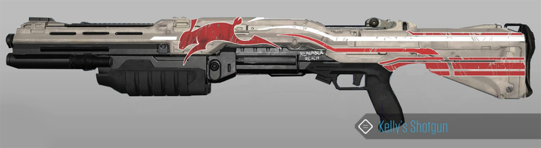
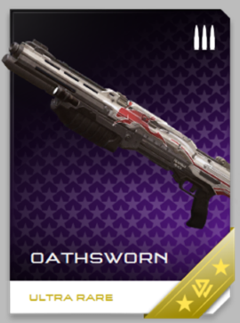

So we now know the name of Kelly's shotgun(s): "Oathsworn" You can find 343's little tid-bit about it in their latest community update: "Building your REQ collection part 1"
Awesome! I haven’t really looked through the new articles on ‘Halo 5′s Requisition System yet, so thank you for pointing this out to me.

It gives two excellent descriptions for Kelly-087’s shotgun, the first reads thusly:
SPARTAN-II’s are drilled to be clinical, efficient, and detached from
the chaos of battle. Weapons are simply tools to be used and discarded
as the tactical and logistical equation changes, without any
sentimentality or emotion. Spartans are expected to use their extensive
experience and the resources available to them through NAVSPECWARCOM to
personalize their weapons only enough to maximize lethality and
ergonomics, with no wasted time or materials.
At least for the first few years of the Covenant War this attitude
prevailed, but it was not long before Spartans began to pay more
personal attention to their wargear, making small, unapproved
modifications and adding charms that reflected the idiosyncrasies of
their personality and mementos dedicated to dead comrades and burning
worlds. Subtle at first, these were the first signs that the horrors of
the Covenant War were eroding the supposedly unbreakable indoctrination
that had forged the SPARTAN-II candidates into super-soldiers who strode
the battlefields of the 26th century like war-born demigods.
Oathsworn is one example of these personalized
implements of death and destruction. The current Oathsworn was not the
first, nor will it be the last. Many Oathsworn’s have been abandoned on
various battlefields over the years, only to be rebuilt for another
battle - another mission. Each one is subtly different, though the
markings have remained the same for years. The words whispered while it
is carefully rebuilt and tuned change each time, but not the intent.
The second summary is what will show on the weapon’s in-game REQ-Card:
Memories of loss and dreams of vengeance,
sealed in steel and composites. Mythic Shotgun with increased damage,
accuracy, and rate of fire. The user’s movement speed is also increased
while Oathsworn is equipped.

I absolutely love both these passages, they’re very poetic. Also I love the idea that Kelly-087 not only modified her guns to fire faster in order to better serve her enhanced reflexes, but also with a custom paint job reflecting her ‘Rabbit’ moniker - and later a “Remember Reach” in honor of all that happened when her adopted homeworld fell.